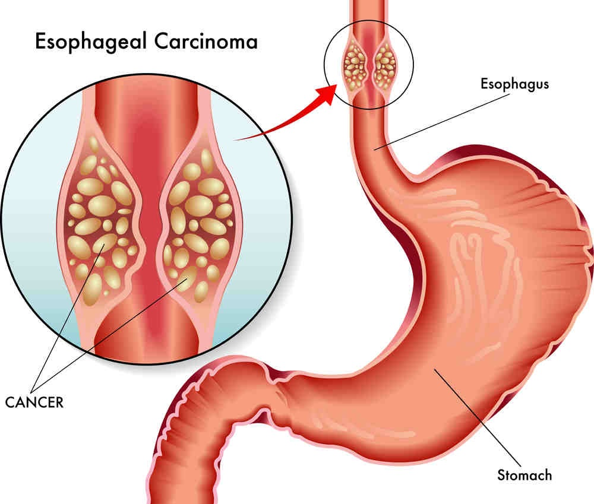

What is esophageal cancer?
The esophagus is a hollow muscular tube that’s responsible for moving food from the throat to the stomach. Esophageal cancer can occur when a malignant tumor forms in the lining of the esophagus. As the tumor grows, it can affect the deep tissues and muscle of the esophagus. A tumor can appear anywhere along the length of the esophagus, including where the esophagus and the stomach meet.
What are the common types of esophageal cancer?
There are two common types of esophageal cancer:
- Squamous cell carcinoma occurs when cancer starts in the flat, thin cells that make up the lining of the esophagus. This form most often appears in the top or middle of the esophagus, but it can appear anywhere.
- Adenocarcinoma occurs when cancer starts in the glandular cells of the esophagus that are responsible for the production of fluids such as mucus. Adenocarcinomas are most common in the lower portion of the esophagus.
What are the symptoms of esophageal cancer?
During the early stages of esophageal cancer, you probably won’t experience any symptoms. As your cancer progresses, you may experience:
- unintentional weight loss
- indigestion
- heartburn
- pain or difficulty when swallowing
- frequent choking while eating
- vomiting
- food coming back up the esophagus
- chest pain
- fatigue
- chronic cough
- hiccups
Treating esophageal cancer
our doctor may recommend surgery if the cancer hasn’t spread to other parts of your body. Your doctor may instead recommend chemotherapy or radiation therapy as the best course of action. These treatments are also sometimes done to shrink tumors in the esophagus so that they can then be removed more easily with surgery.
Surgery
If the cancer is small and hasn’t spread, your doctor can remove the tumor using a minimally invasive approach, using an endoscope and several small incisions. In the standard approach, the surgeon operates through a larger incision to remove a portion of the esophagus and sometimes the lymph nodes around it. The tube is reconstructed with tissue from the stomach or large intestine. In severe cases, a portion of the top of the stomach may be removed as well. The risks of surgery can include pain, bleeding, leaking in the area where the rebuilt esophagus is attached to the stomach, lung complications, problems swallowing, nausea, heartburn, and infection.